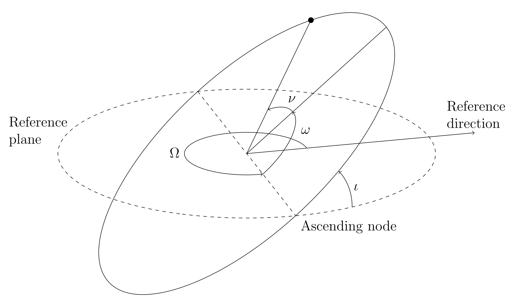

Observing Minor Planets
Abstract
Orbit determination allows solar system objects to be tracked and studied over long periods of time, which can give clues into how the solar system formed as well as evaluate the risk of an asteroid hitting the Earth. The aim of this experiment is to observe a number of minor planets over multiple nights and use the positions from the observations to determine orbital elements for the objects. We did this using the university’s 11” Schmidt-Cassegrain telescope on a computerised equatorial mount and a colour CCD to collect images of the main-belt asteroids 30 Urania and 115 Thyra, near-Earth asteroid 433 Eros and comet 64P/Swift-Gehrels. We observed the objects on 6 separate nights over a month during October/November 2018. Each night we took around 5 images of each object to take an average of the positions and to provide redundancy in case any of the images could not be used. We calibrated our images using AstroimageJ with dark, flat and bias frames we made during each observation session, in order to increase the signal to noise ratio in our final images. We then used Astrometry.net to plate solve our images and AstroImageJ to get the positions of the objects in each image in celestial coordinates. We entered the average of the positions from each set of observations into Find Orb in order to get the orbital elements for each object. The orbital elements we calculated almost all match those published by the Minor Planet Center to within the calculated uncertainty. Subsequently we found that we can use our orbital elements to predict the positions of the objects which should allow us to recover the objects for the foreseeable future.
Introduction
While working on a star catalogue in January 1801, using a 75mm refracting telescope located in the Royal Palace of Palermo in Italy, Italian priest and astronomer Giuseppe Piazzi logged a tiny star in Taurus which, on a second observation the following night, appeared to have moved. Piazzi tracked the object, making a total of 21 observations, until it moved too close to the sun to see. Within a few days of each other, around the start of 1802, Franz von Zach and Heinrich Olbers both used Carl Friedrich Gauss’ predicted positions, calculated using his newly theorised method of orbit determination, to recover the object after it returned into view from behind the sun. In March 1802, while making further observations of the object, Olbers noticed a second small body with similar features which would later become known as Pallas. By June 1802 Piazzi had managed to convince the astronomical community of the time that the object he had discovered was a planet and had named it Ceres Ferdinandea after the patron goddess of Sicily and King Ferdinand of Bourbon, but it would later become known as just 1 Ceres (Foderà Serio et al., 2002). It was not until later in the century, once more of these planets had been discovered, that they were reclassified as asteroids and were designated numbers in order of discovery.
Johnson et al. (2014, Chapter 26) defines minor planets, or asteroids, as small, naturally formed solid bodies that orbit the sun, are airless and show no detectable outflow of gas or dust. In 1947, by which time 2046 asteroids had been discovered, Paul Herget was asked by the International Astronomical Union (IAU) to operate the newly founded Minor Planet Center (MPC) which would collect and distribute measurements of minor planets. It was run by Herget at the University of Cincinnati until 1978. Today the MPC also handles identification, designation and orbit determination and currently operates in the Smithsonian Astrophysical Observatory in Cambridge, Massachusetts and as part of the IAU.
By the mid 20th century many astronomers had become bored and frustrated with asteroids as they frequently interfered with images taken while photographing other objects in the sky, and there had not been any recent scientific developments to increase interest in them (Whipple et al., 1968, Chapter 4). However, since the 1990s interest has grown due to concerns about the risk of Earth being hit by an asteroid, and there is some commercial interest as asteroids can contain large amounts of valuable materials and private space flight is becoming more common. The first dedicated mission to visit an asteroid was NEAR Shoemaker which orbited 433 Eros in 2000 and landed on it in 2001. The mission found that Eros is made up of approximately 1.2% aluminium (McCoy et al., 2001), which is a total of 6.6x1015kg or 62 times the amount extracted from Earth since 1973.
Over the past few years there have been multiple missions visiting comets and asteroids, such as the European Space Agency’s Rosetta probe which orbited comet 67P/Churyumov-Gerasimenko along with the Philae lander which performed the first soft landing on a comet in 2014 (Pérez-Ayúcar et al., 2018). In January 2019 NASA’s New Horizons mission made a close approach of asteroid 486958, nicknamed Ultima Thule, which is currently the most distant object visited by a spacecraft (Stern et al., 2018). Also the Japanese Hayabusa2 mission entered orbit around a near-Earth asteroid in June 2018 and intends to return to Earth with samples from the asteroid in 2020 (Watanable et al., 2017). All of these missions collect data on the geology of these asteroids which can give clues into how the solar system was formed.
These missions rely on accurate orbit determination in order to direct the spacecraft into a close encounter or rendezvous with the solar system objects that they study. Orbit determination also allows the tracking and study of objects for longer periods of time, and the ability to calculate the risk of Earth being hit by an asteroid. An object is classified as potentially hazardous if it has a minimum orbit intersection distance (MOID), the shortest distance between points on two orbits, with Earth’s orbit of 0.05au or less and an absolute magnitude of 22 or less (Gehrels et al., 1994). For asteroids the absolute magnitude uses a reference distance of 1au instead of the more common 10pc used for interstellar objects. An absolute magnitude of 22 corresponds to a diameter of around 75-240m; an impact from an asteroid this size could flatten a city. There are currently 1969 known potentially hazardous asteroids (PHAs) listed by the MPC.1
Orbital Elements

Figure 1: A diagram showing the four directional Keplerian orbital elements: inclination, ι; longitude of the ascending node, Ω; argument of periapsis, ω; and the true anomaly, ν. The first three describe the orientation of the orbit in relation to a reference plane, which in this case is Earth’s orbital plane, and the true anomaly describes the position of the body in the orbit.
The standard way of describing an orbit is by using the six Keplerian elements with, in the case of objects orbiting the sun, the Earth’s orbital plane as the reference plane and the First Point of Aries (0°, 0° in ecliptic coordinates) as the reference direction. The elements that describe the shape and size of the orbit are the eccentricity, $e$, which describes how elongated the orbit is compared to a circle and the Semi-major axis, a, which is half the diameter across the widest part of the ellipse. Alternatively the shape of the orbit can be quantified by the apsis and periapsis, which are the longest and shortest distances from the orbiting body to the host body respectively. In the case of an object orbiting the sun these are known as the aphelion and perihelion (Bate et al.,1971, Chapter 2.3).
The orientation of the orbital plane is described by the inclination, ι, which is the angle between the orbital plane and the reference plane measured at the ascending node, as shown in figure~\ref{fig:elements}. The ascending node being the point at which the object passes through the reference plane northwards. The longitude of the ascending node, Ω, is the angle between the ascending node and the reference direction. The ellipse is oriented in the plane by the argument of periapsis, ω, which is the angle between the ascending node and the periapsis.
The true anomaly, ν, is the angle between the periapsis and the position of the body at a given time. Alternatively, the time at which the body is at it’s periapsis can be used.
\subsection{Object Classification}\label{ssec:objclas} Asteroids are split into different groups based on their location in the solar system and gravitational relationship to planets. %Ceres is a main-belt asteroid, which means it is a member of the asteroid belt %between the orbits of Mars and Jupiter. %Ceres is also one of five dwarf planets and the only one in the inner solar %system. Near-Earth objects are asteroids or comets with a perihelion distance of \SI{1.3}{\astronomicalunit} or less. They can be split into four subgroups based on their orbit compared to Earth’s: Amors orbit completely outside it, Apollos orbit mostly outside, Atens orbit mostly inside, and Atiras orbit completely within Earth’s orbit. Apollos and Amors make up \SI{92}{\percent} of the near-Earth object population.
Trojans are asteroids that are gravitationally locked to one of the major planets, the largest trojan group being Jupiter’s, with \num{7039} identified Jovian trojans compared to only 22 identified Neptunian trojans.\footnote{From \url{https://minorplanetcenter.net/iau/lists/Trojans.html}, last updated \DTMdisplaydate{2018}{10}{28}{-1} when retrieved} However, it is believed that there could be about 10 times as many large (radius around \SI{100}{\kilo\metre}) Neptunian trojans as Jovian trojans of the same size \citep{chiang2005}. Currently Earth has only one identified trojan, a roughly \SI{200}{\metre} wide asteroid discovered in 2010, whereas Mars has nine. They orbit in areas approximately \SI{60}{\degree} in front of and behind the main body along the same orbit, which corresponds to the fourth and fifth Lagrange points of the planet’s orbit.
The Kuiper Belt is a group of small objects that exist beyond the orbit of Neptune, from around \SIrange{30}{50}{\astronomicalunit}, they are rich in water ice and have similar properties to comets. The largest members are the dwarf planets Pluto, Makemake, and Haumea. It is estimated that there are approximately \num{100000} objects at least \SI{10}{\kilo\meter} in diameter in the Kuiper Belt, but so far only around \num{1500} have been discovered. The Kuiper belt is an area of interest at the moment due to the clues that it could hold on the formation of the main planets and the solar system as a whole \citep[Chapter~44]{johnson2014}.
Comets are objects that contain volatile materials and have highly eccentric orbits, such that when they come close enough to the sun the material starts to sublimate and the comet begins out-gassing. This can create a nebulous atmosphere around the comet itself that can reach \SIrange{e3}{e4}{\kilo\metre} and a tail which can be \SIrange{e5}{e7}{\kilo\metre} long \citep{combi2004}. These large features, while very diffuse, can be very bright to an observer on Earth, to the point where they can occasionally be seen in the day time. Recorded observations date back to 613\BCE{}in China \citep{stephenson1984}.
\subsection{Object Detection and Observation}\label{ssec:odao} While the telescope was not invented until the \nth{17} century, records of naked eye observations of comets going back to ancient China can still be used to calculate the date of their perihelions due to their fast movement across the sky. The earliest plausible record of Halley’s comet dates back to 240\BCE{}with more detailed records not appearing unit 12\BCE.\@ It was Edmond Halley who first recognised the periodicity of comets and predicted the return of his namesake. Halley also contributed observations of the Great Comet of 1680 to Newton which he used in {\it Principia\/} to attempt to determine its orbit. The telescopes used by Newton and Halley were similar to the one used by Piazzi to discover Ceres over a century later, being very intricate instruments that used micrometer microscopes to measure positions.
In the late \nth{19} century German astronomer Max Wolf pioneered the use of astrophotography to search for asteroids, using a lens intended for portraiture to get a very large (\SI{12 * 8}{\degree}) field of view compared to the longer focal length telescopes used by other astronomers at the time, which allowed him to search the sky much faster \citep{tenn1994}. The camera would be attached to an equatorial mount, as a telescope would usually be, which is designed to rotate the camera to move with or perpendicular to the direction of rotation of the Earth. This would move the camera with the stars throughout the exposure so any objects moving relative to the stars would appear as streaks on the photographic plate. Wolf used this method to discover a total of \num{228} minor planets.
Today sky surveys use computerised telescopes with charge-coupled device (CCD) cameras in order to automate the process as much as possible. This allows for objects to be found faster and for dimmer, and therefore smaller and/or more distant, objects to be discovered. Currently there are multiple large scale survey projects which have minor planet detection and tracking as either their primary or secondary goal. The Panoramic Survey Telescope and Rapid Response System (Pan-STARRS) in Hawaii repeatedly surveys the visible sky with the primary goal of detecting potentially hazardous objects \citep{chambers2018b}. It uses two \SI{1.8}{\meter} telescopes with high resolution CCD arrays in order to achieve wide fields of view while maintaining a small pixel scale. This means a large area of sky can be searched whilst still ascertaining very precise positions. The Large Synoptic Survey Telescope (LSST), due to be completed in 2020 in Chile, has similar goals to Pan-STARRS but increased capabilities. The LSST will use an \SI{8.4}{\meter} primary mirror to achieve a \SI{9.6}{\degree} field of view with \SI{0.2}{\arcsecond} pixel scale compared to Pan-STARRS which has a \SI{3.2}{\degree} field of view with \SI{1}{\arcsecond} pixel scale \citep{jones2009}. This should allow the LSST to detect many more solar system objects and detect potentially hazardous objects significantly earlier than Pan-STARRS.\@
Follow up observations are also often made with more general use observatories, depending on the interest in the object discovered. For example the object 1I/2017~U1, or \okina{}Oumuamua, was discovered in 2017 by Robert Weryk with Pan-STARRS.\@ Once \okina{}Oumuamua was determined to be the first interstellar body to be discovered it generated a lot of interest. It was first thought to be a comet but follow up observations showed no signs of outgassing. This, combined with the small amount of non-gravitational acceleration detected and its strange cigar-like shape, led to many theories on the nature of the object, although no consensus has been reached. Observations were made with the Canada-France-Hawaii telescope, Keck 2 observatory, and United Kingdom Infrared Telescope in Hawaii; the Very Large Telescope and Gemini South telescope in Chile \citep{meech2017}; as well as the Spitzer and Hubble space telescopes \citep{trilling2018}.
\subsection{Orbit Determination}\label{ssec:orbdet} Orbit determination is the calculation of the shape of an orbit using a set of observations. The first method for orbit determination was published in Newton’s {\it Principia\/} in 1687, this method was then refined by Euler in 1744 and again by Lambert in the 1760s. Newton’s method involves constructing an intricate diagram from three evenly spaced observations in order to calculate parabolic approximations of orbits of comets. After the discovery of Ceres by Piazzi, Gauss used his method for orbit determination to calculate positions which were used by both Olbers and von Zach to recover its orbit following its disappearance behind the sun \citep{gronchi2005}. Gauss’ method is also based on the use of three observations to find an orbit, but it is often combined with the method of least squares, which was also introduced by Gauss, to determine more accurate orbits using more observations. Gauss’ method, which he did not publish until 1809, is based on transformations of the orbiting body’s position vector. The method of least squares, also devised by Gauss, is used to fit linear equations to a set of data and it can be applied in conjunction with his method for orbit determination to acquire a more accurate result. This allowed Olbers and von Zach to recover Ceres from Piazzi’s 21 initial observations.
Another method for orbit determination was introduced by the Finnish astronomer Yrj"o V"ais"al"a in 1939 which uses just two observations to get an imprecise prediction. V"ais"al"a’s method is commonly used for newly discovered objects in order to be able to continually observe the object over the first few nights before a more accurate determination can be made \citep{bowell2002}.
All of these methods are only used to find preliminary orbits, as they ignore the effects of other phenomena that may effect the orbit, known as perturbations. These perturbations could be caused by the mass distribution within the object, gravitational effects from other objects, and radiation pressure from the sun amongst others \citep[Chapter~2.3]{schutz2004}. Modern methods of orbit determination are usually in the form of computer programs. They often use some form of Gauss’ method to find a preliminary orbit with an N-body simulation to calculate the effect of the perturbations. The N-body simulation calculates the positions of any number of objects in a system and their gravitational effects on each other, which can be used to see how multiple asteroids with similar orbits might interact with one another.
NASA’s New Horizons mission launched in 2006 with the primary goal of performing a flyby of Pluto, which it did in 2015. It also had the secondary goal of collecting data on Kuiper Belt objects, although no suitable candidates were found until June 2014 when the object \ultima, nicknamed Ultima Thule, was discovered using the Hubble Space Telescope (Stern et al., 2018). Just \num{16} months after the discovery, or \SI{0.004}{\percent} of its orbital period, propulsive manoeuvres were made by New Horizons based on orbital parameters calculated using observations from this small proportion of the orbit. These manoeuvres put the spacecraft on a course to encounter the object to within \SI{3500}{\kilo\meter}, which it did successfully in January 2019.
\section{Method}\label{sec:method} The intention of this project was to observe a number of solar system objects and determine their orbital elements. In order to do this we made images of a total of 9 different solar system objects on six nights over a month using the university’s telescope. We also made a series of calibration images each night in order to remove artefacts from our final images, which we did by subtracting them from the images of the objects. Then we used the images to determine the positions of four of the objects at the time each image was made, and entered the times and positions into an orbit determination program.
\subsection{Observation}\label{ssec:obs} We used an \SI{11}{\inch} Schmidt-Cassegrain telescope (Celestron EdgeHD 1100) on a computerised equatorial mount (Celestron CGX). We made observations on six different nights between \DTMusedate{first} and \DTMusedate{last}. We used the Minor Planet Center’s observing target list tool\footnote{\url{https://minorplanetcenter.net/whatsup/index}} each night to identify and locate potential objects to observe. The use of known positions was purely to allow us to locate these objects and did not affect our results. Due to the fact that we could not predict when we would have suitable weather for observing, we decided to make observations of about six different objects each night. This meant if we were unable to observe any of the objects for any reason we still had alternatives to look at. \enlargethispage{1.5\baselineskip}
Before each observation session we would set up the telescope, the first thing to do was make sure the mount was calibrated. If the mount is not calibrated correctly it will not point the telescope at the correct part of the sky when given coordinates. The calibration routine involved the mount pointing the telescope at where it thinks a given bright star should be and we would correct manually to make sure the star is at the centre of the CCD.\@ This was then repeated multiple times to improve the accuracy of the mounts automated positioning system, known as a go-to system. The telescope was then focused by pointing it at a bright star and placing a Bahtinov mask in front of the objective. The Bahtinov mask creates diffraction spikes which can then be aligned to achieve optimum focus.
We would then capture various types of calibration images to improve the signal-to-noise ratio and remove artefacts in our final images. Dark frames are taken with the same exposure time as the images of the objects but blocking all light from reaching the sensor. When subtracted from the light frames, the images of our objects, they make sure that each pixel on the sensor gives the same value with no light detected. Bias frames are taken with the sensor or telescope covered like dark frames, but with the exposure time set to 0. Subtracting bias frames removes noise generated by the sensor readout. Flat frames are evenly illuminated to show any dust spots or vignetting in the final image; we took them by pointing the telescope at the wall of the observatory with the lights on. We usually took around five of each of the calibration frames to average out any random noise in them and to prevent that noise from being incorporated into our final images.
Each time we went to observe an object we would start by entering the coordinates from the MPC into the telescope. We often found that the object would not be in the field of view at this point and we had to adjust the position of the telescope. This was due to the telescope mount’s go-to system not being accurate enough for the small field of view (\SI{27*18}{\arcminute}) we were working with. The small field of view made it harder for us to locate the objects but theoretically it should have allowed us to ultimately find more accurate positions of the objects. The images from the CCD attached to the telescope are automatically transferred to the computer in the observatory, on which they are plate solved. Plate solving is the process of finding the position in the sky of the given image, which is done by comparing the relative positions of the stars in our images to a large database of known star positions. In order to confirm that we had found the target objects we would check the positions compared to the MPC’s predicted positions and make sure we could see an object where it should be.
Once we found the target object we would take at least five images of it so we could later find its average position over the different exposures, and to make sure that if the telescope were to move slightly during one of our exposures we still had plenty of images to use. Most of our exposure times were \SI{30}{\second} but they ranged from \SI{10}{\second} to \SI{45}{\second} depending on how bright our object was and how well the telescopes tracking was working. The tracking in the telescope mount varied slightly depending on how the mount was positioned. The apparent brightness of the objects depends on their size, albedo, distance from the sun and distance from the Earth. We could only detect objects down to about \nth{15} magnitude so we were limited in the number of objects that we would be able to detect.
We kept notes on the image files of each object and the exposure times in a spreadsheet, which we also updated later to include links to each of the image files for convenience when we went to process them.
\subsection{Data Processing}\label{ssec:data} We processed the images with the calibration frames in order to achieve the greatest signal-to-noise ratio, potentially this gives us greater accuracy when calculating the positions of the objects. We used a program called AstroImageJ \citep{collins2013} to process the images. It stacks each of our calibration images into master versions and subtracts those from the light frames. Being a colour sensor, the CCD we were using had a Bayer filter, or colour filter array, which only allows a single colour of light to reach each pixel in a repeating pattern of red, green and blue. To convert the monochrome image, that comes from the sensor, into a colour image we would have to debayer it, which is the process of applying the colour filters to each pixel in the image file. We decided not to debayer the images, which could cause the positions we found to be offset by a pixel if any of our objects were primarily one of the colours used by the filter. However this offset is smaller than the size of the stars in our images so it should not affect our results. \enlargethispage{0.5\baselineskip}
We then plate solved the images, which AstroImageJ does by uploading the images to a service called Astrometry.net \citep{lang2012}. This returns the position of the centre of the image in celestial coordinates, as well as the angular size of a pixel. This then allowed us to use AstroImageJ’s centroid tool, which finds the centre of brightness of an object, to establish the position of our target. We recorded this in a spreadsheet with the time at which the image was taken. We decided not to stack the calibrated light frames as some of the objects moved a noticeable amount from the first frame to the last, this would cause the object to be elongated and thus reduce the accuracy of the position. Instead we averaged the positions of the objects in each separate frame. \begin{table} \centering \caption{The orbital elements calculated using our observations}\label{tab:orbel} \vspace{7pt} \begin{tabular}{lrrrr} \bfseries Orbital Element & \bfseries 30~Urania & \bfseries 115~Thyra & \bfseries 433~Eros & \bfseries 64P\\midrule
Semi-major axis (\si{\astronomicalunit}) & \num{2.368(4)} &
\num{2.38(4)} & \num{1.4575(7)} & \num{4.44(3)}\\
Eccentricity & \num{0.128(2)} & \num{0.19(2)} & \num{0.2226(1)} &
\num{0.686(2)}\\
Period (years) & \num{3.64(1)} & \num{3.7(1)} & \num{1.760(1)} &
\num{9.35(8)}\\
Argument of perihelion (\si{\degree}) & \num{87.6(6)} & \num{97.16(7)} &
\num{178.8(1)} & \num{97.1(1)}\\
Ascending node (\si{\degree}) & \num{307.47(8)} & \num{308.8(4)} &
\num{304.29(5)} & \num{300.03(6)}\\
Inclination (\si{\degree}) & \num{2.096(2)} & \num{11.60(3)} &
\num{10.825(4)} & \num{8.94(1)}\\ \end{tabular} \end{table}
After finding the average position of the objects for each set of observations we converted the data into the MPC’s \num{80} column format which allowed us to enter it into a program called Find Orb \citep{gray2012}. The \num{80} column format has been in use since the Minor Planet Center was founded in 1947 and was originally designed for punch card based computers. We used a spreadsheet to convert our data from the units we recorded the positions in, to the units required by the 80 column format, and to compile the data into the format. We then ran the orbit determination program, Find Orb, with our observations for each of the objects to ascertain the orbital elements.
The objects that we chose to focus on, from the nine objects that we made observations of, were 30~Urania, 115~Thyra, 433~Eros, and 64P/Swift-Gehrels. We chose them because they are the objects for which we had the most data, and they represent a good selection of different types of objects, Urania and Thyra being main-belt asteroids, Eros a near-Earth object or more specifically an Amor, and Swift-Gehrels a comet. This should give us a spread of different semi-major axes, eccentricities and orbital periods.
The only control over the uncertainty on the observation data is via the precision of the figures that were entered, which Find Orb uses to estimate the error on the positions. We entered our positions down to \SI{0.1}{\arcsecond} because we found that the error on the plate solutions of each image was usually around \SI{1}{\arcsecond}. The error on the plate solutions were calculated by finding the standard deviations of a list of correspondences between image and reference stars given by Astrometry.net. So with the averaging of multiple results the error will be less than \SI{1}{\arcsecond}. Find Orb then gives errors on all of the results, calculated using the distances between our observations and the orbit, or residuals, except for the period. We calculated the errors on the periods by propagating the errors from the semi-major axes.
\section{Results}\label{sec:results} The orbital elements for the objects calculated using our observations, along with the uncertainties, are shown in table~\ref{tab:orbel}. Since they are both main-belt asteroids we expected to see similar periods and low eccentricities for Urania and Thyra, which is shown by our results. We also see a lower period for Eros and a larger period and high eccentricity for Swift-Gehrels, which are expected of near-Earth asteroids and comets respectively.
Since we were always observing at roughly the same time of night and through a short portion of the year, we would expect that the objects that were easier for us to see, i.e.\ that are brighter and further from the horizon, would have similar longitudes of their ascending nodes. However the MPC figures for the other objects that we observed shows that there is more of a spread than shown here, which suggests that the fact that all our objects were within \SI{10}{\degree} of each other is purely coincidental.
There is quite a large inconsistency in the errors on the results, which could be due to where in the orbit each of the objects were at the time of observing. The objects closer to their perihelion will be moving faster relative to the sun so there will be a larger difference in their positions between our observations and therefore the calculated orbits should be more accurate. Urania and Thyra were at perihelion on \DTMdisplaydate{2019}{01}{09}{-1} and \DTMdisplaydate{2019}{02}{23}{-1} respectively, which is \SI{4}{\percent} of Urania’s orbit and \SI{7}{\percent} of Thyra’s since our last observation on \DTMusedate{last}. This is one possible explanation as to why Thyra generally has a larger amount of uncertainty in each of the elements than Urania.
\begin{figure} \centering \input{figures/orb-el} \caption{A plot of our results calculated using our observations in Find Orb, divided the results published by MPC for each of our objects}\label{fig:orbel} \end{figure}
Swift-Gehrels reached its perihelion on \DTMdisplaydate{2018}{11}{03}{-1} which was during the time that we were observing. Eros reached its perihelion on \DTMdisplaydate{2019}{02}{01}{-1}, which is \SI{12}{\percent} of its orbit after our last observation, which would suggest it should have larger uncertainties on the orbital elements than all of the other objects. This could be due to Eros’ relative proximity to Earth during the time we observed it. Over the observation period Eros was around \SIrange{0.35}{0.51}{\astronomicalunit} from Earth whereas Urania and Thyra were both around \SI{1.5}{\astronomicalunit} away. This meant that Eros appeared to move much more quickly relative to the background sky, which would then reduce the proportional size of any error on our observations.\pagebreak
\section{Discussion}\label{sec:disc} The Minor Planet Center publishes orbital elements for objects calculated using observations from many sources going back as far as the initial discovery of Ceres in 1801. Figure~\ref{fig:orbel} shows each of the orbital elements for each of the bodies that we calculated divided by those given by the MPC, which are known to a much higher degree of accuracy than our results. This comparison shows that our results almost always fit with those from the MPC to within our calculated uncertainties.
Our results could have improved by taking observations on a greater number of nights over the same period, although we were limited by when we had good enough weather to observe. The best way to improve the accuracy of our determinations would be to make observations through a larger amount of the target bodies’ orbital periods, although we were limited in the amount of time we had to make our observations.
\subsection{Errors on our Observations}\label{ssec:err} \begin{figure} \centering \input{figures/obs} \caption{A graph of the deviations from the mean position of each set of observations. The centre square shows the size of a pixel in our images (\SI{0.57}{\arcsecond}), the inner red circle shows the error on the plate solutions (\SI{1.37}{\arcsecond}) and the outer black circle shows the average standard deviation of each set (\SI{1.46}{\arcsecond}).}\label{fig:deviations} \end{figure} Since Find Orb will only estimate the error on each observation based on the precision of the positions given, we rounded all of our positions to \SI{0.1}{\arcsecond} under the assumption that the error would be less than \SI{1}{\arcsecond}, based on the errors of the plate solutions. Figure~\ref{fig:deviations} shows positions of our objects in each observation compared to the mean position of that set of observations and compares that to the average plate solution error, average standard deviation and pixel size. The fact that the average plate solution error and the average standard deviation are very similar suggests that the primary source of random error on each of our observations could be the plate solution.
The average distance from our observed position to the MPC’s predicted position, for the same object at the same time, is \SI{8.6}{\arcsecond}. This distance is caused by any inaccuracies in the predictions from the MPC, which could have been created by perturbations, and any systematic error that could have occurred in our observations. The systematic error could have come from how the positions of the stars and objects within the images were calculated, which would effect both the plate solutions and the acquisition of the position of the target object in the image. \pagebreak
One potential way to reduce uncertainty on the positions of stars and our target objects is to reduce the size of the stars in the image. The average full width at half maximum (FWHM) of Urania in our images was \SI{5.8}{\arcsecond}. Improving the optics used and imaging under better atmospheric conditions would decrease the FWHM, giving us more accurate positions. We had an issue with the telescope throughout our observations which caused stars towards the edges of the frame to be elongated, in order to reduce the effects of this we were careful to make sure our objects were close to the centre of the image, however it still could have contributed to random and systematic errors in our plate solutions.
\subsection{Object Recovery}\label{ssec:rec} \begin{figure} \centering \input{figures/ephemeris} \caption{A graph showing the distance between our predicted positions of the objects and where MPC expects them to be.}\label{fig:diff} \end{figure} One further test of the accuracy of our orbital elements is to look at the predicted positions to see if we could recover the objects at a later date, in the same way that Ceres was recovered in 1801/1802 (see Section~\ref{ssec:orbdet}). Since we are no longer making any more observations we have compared our predicted positions to those published by the Minor Planet Center. This comparison, covering just over 3 years after our last observation, is shown in figure~\ref{fig:diff}, which gives the largest distance between predicted positions as \SI{48}{\arcsecond}, which is much less than the \SI{18}{\arcminute} field of view of the university’s telescope sensor on the short edge. This shows that our observations, taken over the space of a month, would be enough to continue to find an object for the at least the next three years. This would be useful in the case of a newly discovered object that may not be observable for a while, perhaps due to it moving behind the sun relative to the Earth, so the object could be found once it is visible again, as was the case with 1~Ceres.
This, however, does not take into account any perturbations which may change the orbital elements over time and cause both our predictions and the MPC’s to be incorrect. We found that while making our observations 64P/Swift-Gehrels’ position would be noticeably different to that published by the MPC which was likely due to outgassing as it was close to perihelion while we observed it. This was not a problem for the other objects as they were not outgassing and generally have more regular orbits as they are less eccentric and therefore are less likely to encounter other objects which may effect their orbits. \pagebreak
\section{Conclusion}\label{sec:conc} Orbit determination is important because it allows us to track and study objects for longer periods of time and assess the risk of Earth being hit by an asteroid. Also the calculation of orbits of solar system objects and spacecraft allows for missions to make close encounters or rendezvous with distant objects such as the New Horizons mission’s close encounter with Ultima Thule.
During this project we successfully managed to determine orbital elements for the objects 30~Urania, 115~Thyra, 433~Eros and 64P/Swift-Gehrels using observations we made on 6 nights over a month in October/November 2018 using the university’s observatory. The orbital elements we found almost all agree with those published by the Minor Planet Center to within our calculated uncertainty. We also calculated that the predicted positions of the objects based on our orbital elements agree with those published by the MPC to within the field of view of the university’s telescope for at least three years. This suggests that we would be able to use our predictions to find the objects for future observation, which is an important part of the process of discovering new solar system objects.
One way in which we could extend this project would be to look at other
categories of objects, such as the Jovian trojans, the moons of Jupiter or
Saturn, or a Kuiper Belt object.
The brightest Kuiper Belt object, Pluto, reaches about \nth{14} magnitude at its
brightest.
This means it would be possible for us to observe however due to its extremely
long orbital period we would need a longer amount of time to get an accurate
orbit.
The largest Jovian trojan, 624~Hektor, ranges in apparent magnitude from around
\num{12} to approximately \num{16}, which is brighter than the
\nth{14} magnitude of Swift-Gehrels when we observed it, and there are many
other Jovian trojans that can be bright enough for us to observe.
Jupiter’s four largest moons, known as the Galilean moons after their
discoverer, would be easily visible with the university’s telescope being bright
enough to be seen with the naked eye, if they were not so close to their much
brighter host.
They have short orbital periods ranging from \num{1.7} days to \num{18} days.
Jupiter also has many smaller moons although only four more could be bright
enough for us to observe.
Observing moons has another advantage, for the most part, all the moons of a
given planet would be visible within the field of view of the telescope at one
time allowing us to make more observations of the objects in the same amount of
time.
\bibliographystyle{astron} \bibliography{references}
\blankpage%
\end{document}
-
From https://minorplanetcenter.net/iau/lists/PHAs.html, last updated 2019-04-10 when retrieved ↩